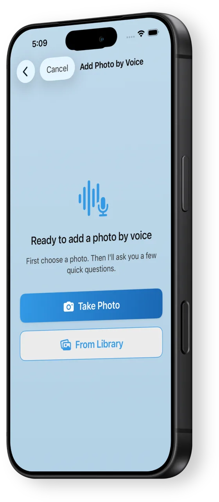
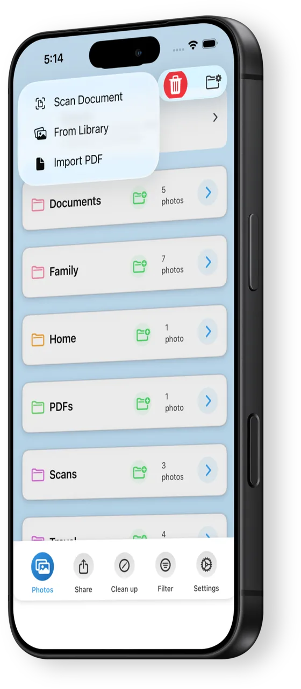
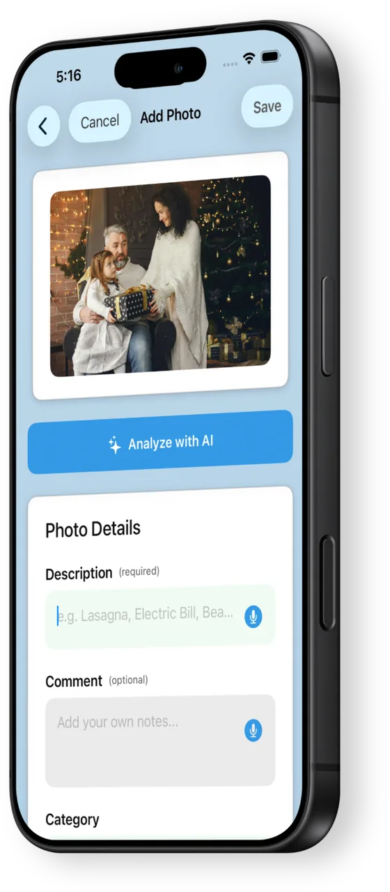
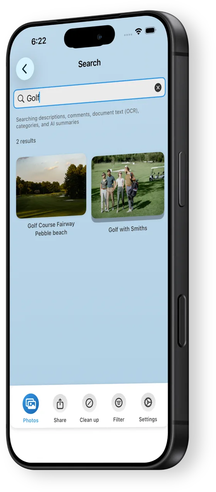

Photo Filing Cabinet AI
Every important paper. Found in seconds.
Organize photos, scanned documents and PDFs in one place. Add items by voice, scan papers, import PDFs, and use AI to identify, summarize and organize them so you can find important information later.




Scroll sideways to see every screen
What you can do
Organized your way
Keep photos, scans and PDFs in folders and subfolders, like Documents › Insurance, with a count on every folder.
Add from many sources
Take a photo, scan a paper document, pick from your library or import a saved PDF.
Voice activated and prompted
Choose a photo and the app asks a few quick questions out loud. A hands-free, senior-friendly way to file things.
Analyze with AI
Let AI help with titles, descriptions and understanding what a document says. Review everything before you save.
Find what you need fast
Search descriptions, comments, categories, AI summaries and even the text inside your documents.
See Photo Filing Cabinet AI in action
A short demo video is on its way.
Help shape Photo Filing Cabinet AI.
Join the public TestFlight beta to try new builds first and send feedback straight to the developers.